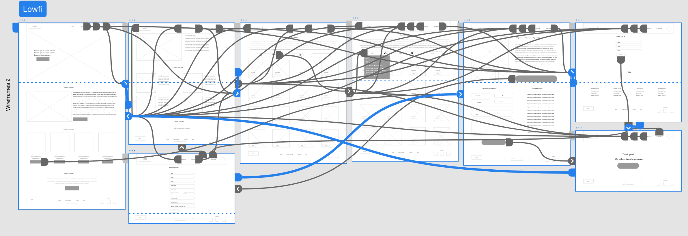

OVERVIEW
Adopt is a website which helps users to adopt a pet of their choice with all the formalities completing online and people who think they can’t take care of their pets can post the pet details to be visible in the search list and if anyone is interested they can directly pick it from their home or can pick it in nearby adoption center.
Project Duration
Sep 2022 - Oct 2022
My Role
UX Design,User research, Wireframeing, Prototyping&Testing.
Tools Used
XD, Jamboard, Google sheet, Google Docs, Pen, Paper
The Problem
People find it difficult to find a pet of their choice and going through the donation process is time taking. They also find the donation process frustrating when the websites only accepts few payment methods.
The Solution
Adopt website makes the overall experience of the adoption and donation process easy by providing users with the wide range of options for pets to adopt and a donation option which accepts multiple payment methods.
DESIGN PROCESS

USER RESEARCH SUMMERY
Study type: Unmoderated study
Number of participants: 5
Location: Remote
Duration: 15 min
PAIN POINTS
Time Taking
Searching for pets in different websites to find for what we are looking for is time taking.
Confused
Dog owners who can’t take care of them anymore has no clue how to find a new home for the pets.
Frustration
The donation process is a bit frustrating when the website only accepts specific payment methods.
Wait list
After going through all the process the waitlist sometimes might be long and they can’t pick the pet on the time they want.
PERSONAS
PAPER WIREFRAMES
The main goal of the website was to make it easy for the users to find a pet and also make the donation process easy. We also wanted the website to be simple and easy to navigate.
The wireframes were designed by sketching some quick alternatives to each screen and the best options were marked and are put together in a single screen and formed a wireframe.
DIGITAL WIREFRAMES
Digital wireframes are created for different screens to make the overall experience of the users without any confusion. The designs are slightly modified with respect to the screen sizes. The continuity is maintained through out the website for different screen sizes.

LOW-FIDELITY PROTOTYPE
The digital wireframes are modified and low-fi prototypes are designed to make it easy to understand the flow and test.
USABILITY STUDY FINDINGS
We conducted two rounds of unmoderated usability with 5 participants. Findings from the first study helped guide the designs from wireframes to mockups and the second study used the hi fidelity prototypes and revealed what aspects of the mockups needed refining.
Round 1 findings
User wants easy navigation without any confusion.
User wants different payment options to donate.
User expects a confirmation after donation through email and on the website.
Round 2 findings
Able to donate from any page of the website.
Need Filters for easy access to pets.
Making the buttons clear.
MOCKUPS

ACCESSIBILITY CONSIDERATIONS
The colors used in the app supports the Web accessible guidelines. They were run in the Webaim and have passed.
We have an option to control the automated content in the app using the side buttons.
Alternative navigation options are provided and all the pages are consistent with respect to design which avoids confusion.
TAKE AWAYS
In conclusion, the design process for the EDU app involved conducting user research, creating personas, conducting competitive analysis, sketching and prototyping, and conducting usability testing. Through this process, I was able to identify the key pain points and desires of users, and design an app that addresses those needs. The final result is an app that makes it easy for people to learn without thinking of their budget and utilizing all their time learning. I learned a lot throughout the process, also gained valuable insights into the needs and preferences of my target audience, and I improved my design skills and knowledge of user-centered design principles.
Interested in working together? I’d love to hear from you.


© 2022 All Rights Reserved to Indrajasiripuram